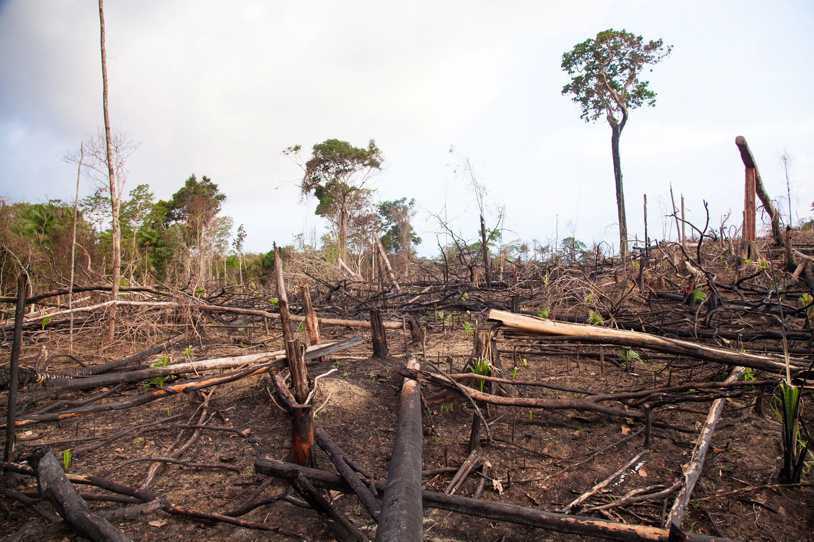

"DEFORESTATION"
Deforestation refers to the decrease in forest areas across the world
that are lost for other uses such as agricultural croplands, urbanization,
or mining activities. Greatly accelerated by human activities since 1960,
deforestation has been negatively affecting natural ecosystems, biodiversity, and the climate
MINING FOSSEL FUELS
Back
